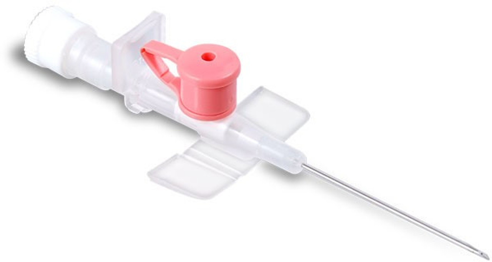
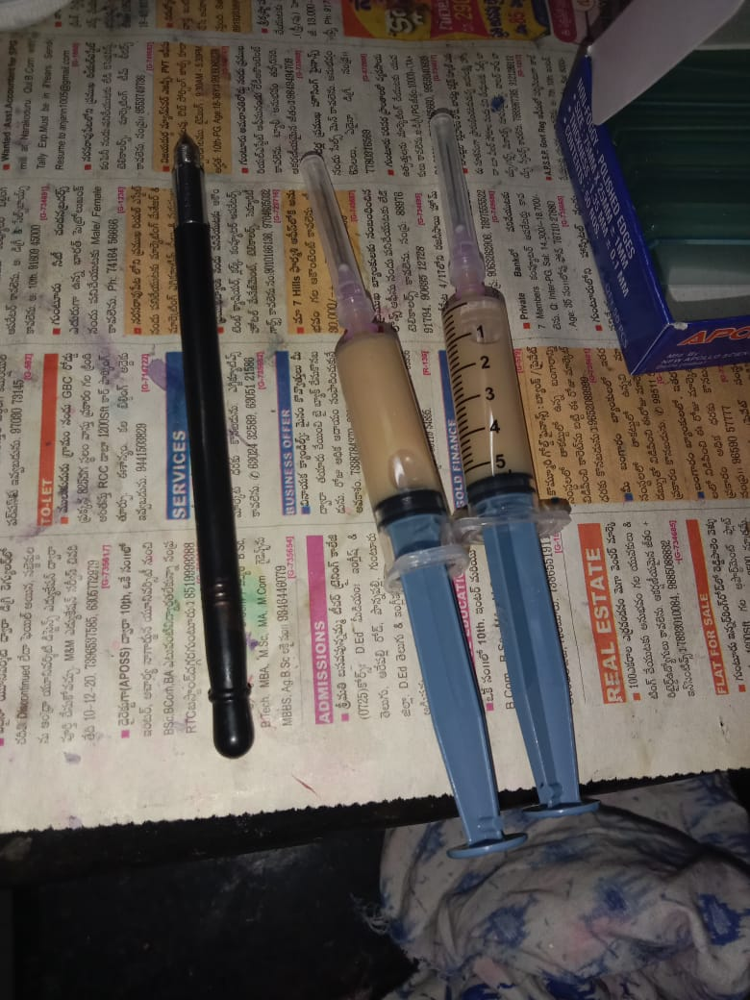
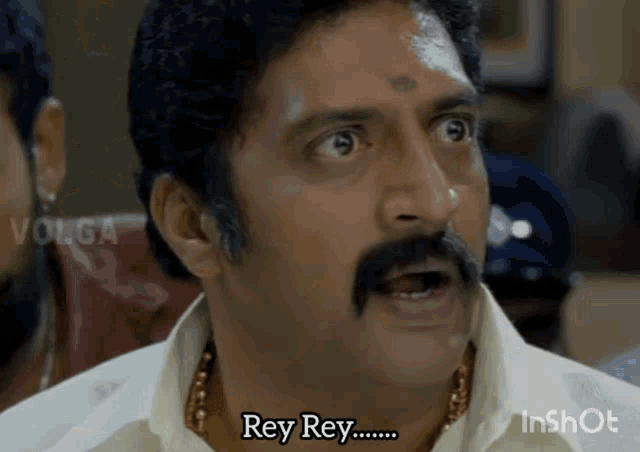

Hey so it's 12:30 a.m. and 18th June 2025.
So let's document my IMTech journey as my 8th sem results are updated, and after 3 sems I have passed all courses.
This is my Sem 1 story.

So it's a day after my JEE Advanced exam. I knew I was going to get a non-core branch in an NIT and take an NIT seat for sure as I got 99 percentile in both Maths and Physics and 93 in Chemistry :( even in the first round of counselling. So for my percentile, in the mock rounds I got NIT Warangal ECE and in the second mock I floated, as my top choice is UOH :|
Well, before coming to why I chose UOH — the day after my exam, in the afternoon, I woke up and started eating egg curry rice and found out an egg-like thing on the left side of my neck. That didn't scare me, but my mother saw me examining my neck in front of the mirror and saw the egg-like thing. Her scare towards me scared me the most. She started shouting that I got a cyst because I ate Maggi noodles (which was my fav back then). Her theory was that Maggi noodles got stuck there and became like that egg-shaped thing.

So, as usual, I waited for 2 days. It didn’t go away. Hence, I went to Ravindra Babu, a crowd-favourite MBBS doctor (who did penta penta — you'll know in future). Okay, so when I went near him, he told me it’s a basic lymph node enlargement. But trust me, I had already surfed the internet and knew that lymph nodes don’t come that big. It was too big for a lymph node. Lymph node maha ayitey shirt button anta peddadi ayyindi. This guy comparing an egg-like structure to a lymph node was odd to me. But the only reason I continued near him was he gave me antibiotics — tablets. Trust me, back then if you wanted to inject me, one person wasn't enough. Two nurses used to hold my hands, compounder used to hold my legs. Me crying, “Doc, please don’t inject me.” I was truly terrified of injections. I was a heavy guy back then and me crying in front of female nurses of my age and patients was funny and siggu (embarrassing) to think about now. Anyway, I continued the course with him and in 3 days, he said it would be gone.
Well, 3 days were over and the egg didn’t go. So antibiotics started again, but this time it was intravenous. That means: **I IN INJ INJE INJECT INJECTION!!!**

I begged him to please give tablets. He didn’t accept. He told me to come tomorrow. As usual, after a lot of crying, shouting, and drama, he injected a cannula (note). So what is a cannula? Cannula is a device something like this:

So I hope you can understand the pain in my hand — it’s inside my hand. Antibiotics done intravenously. And yes… did the egg thing go? **A BIG NOOOOOOOOOOOOOOOOOOOOOOOOOOO** Then I was referred to surgery. Well, trust me, my mind wasn’t working anymore. So why was the surgery done? **READ CAREFULLY — POKIRI LEVEL TWIST LOADING...** So the egg-like structure which developed was a lymph node enlargement due to bacteria. They tried oral antibiotics — didn't work. They tried intravenous antibiotics (cannula) — didn't work. Hence, the final way was to cut my neck (incision in formal terms) and take the lymph node out. So that Ravindra Babu referred me to another neurosurgeon. He didn’t do many tests, just a blood test and asked for a biopsy. A biopsy is like — neck lo egg vachindi kada — danlo ki oka injection podichi fluid teesi asal aa fluid enti ani check cheyadam. Something like this:

But I didn’t do this. Well, this pic is my fluid only :) But I didn’t do the biopsy on the surgery day. So you have a doubt right? How did I get the pic and is it mine? **Ade Pokiri Level Twist** So the D-Day came. Morning 5:00 a.m. — woke up Brush and bath done by 5:15 a.m. Started playing Free Fire till 6:15 Appatlo pro player — I used to play around 14-16 hrs a day. So done, started for the hospital, went to temple, all set. Doctor asked — "em tinav?" — because if we didn’t eat anything, the anesthesia goes deep into blood quickly as blood is empty. There was no doctor at first, he came 2 hours late. I was in the room. I said I’m hungry. For extra billing, they put saline and gave coconut water. (Mini Pokiri Twist) Doctor came, gave anesthesia — but I didn’t sleep. Doctor started operating while I was alive!

I removed the mask with my hand and told doctor: “Doctor, please let me sleep. Then come and do whatever you want on me please.” Why didn’t I sleep after anesthesia? Extra dabbul kosam insulin and coconut water pettaru ga — anduke. After 2 minutes — manaki mattu ekkindi. Like I didn’t sleep, nor was I awake. I was seeing what they were doing but couldn’t feel anything. I slept after 5 minutes :) After 10 minutes I woke up. Doctor told me that during surgery my BP raised and I was shouting: **“Shoot shoot! Scope karo! Enemy! Enemy!”** (Free Fire terminology) He strictly told me not to play Free Fire again. Then I was moved to ICU ward — all patients sleeping and one nurse there. The woman beside me started crying loudly. I already had a headache. Later I got to know she was poor and didn’t have money for her kid’s appendix surgery. Doctor did it for free. But she didn’t have money for painkillers, so she didn’t take them post-surgery. Does this make an impression on me? Yes, it did. So I was getting loaded with painkillers and antibiotics through a two-piped single cannula every 30 minutes. Shifted to general ward. Good sleep. Morning came. Doctor gave me 5-day antibiotic course. The night after surgery, my cannula got choked — when the injection is inside the nerve, blood around it hardens and becomes resistant to medicine flow. They either flush it (extremely painful) or change the cannula (another injection). I chose the first one. Trust me — this was the most painful moment in the whole surgery process. Five days later, the wound healed. I was okay. Meanwhile, I got to know about my friends via WhatsApp. We chatted a lot and copied 100% in semester exam and guess what… **I am the semester topper that semester!** **1st Sem Topper: MANIKANTA SUNKARA :)** Cut cheste — just after exams of 1st sem — the egg-like structure came back… But why? How? And is it cancer? This is my Sem 1 story.